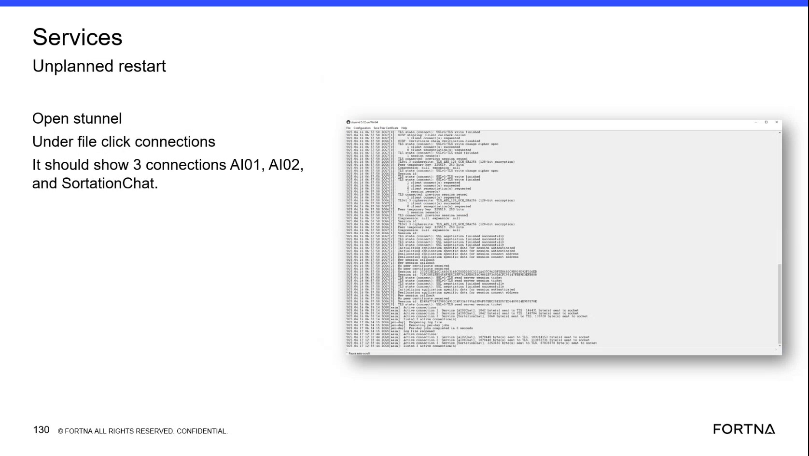

| Procedure ID | proc_check_s_tunnel_active_connections_and_tls_status_v1 |
|---|---|
| Title | Check S-Tunnel Active Connections and TLS Status |
| Procedure Type | diagnostic |
| Primary Role | L2_support |
| Support Safe | Yes |
| Capability Tags | ups_chat_or_stunnel_health |
| Access Surface | stunnel |
| Audience Roles | L2_support, L3_support |
| Failure Pattern Tags | stunnel_or_chat_down |
| Validation Status | needs_sme_review |
| Merge Status | source_finalized |
Use the S-Tunnel / Chat path display on the remotely accessed WCS primary computer to inspect the connection list, active connection count, service names, traffic counters, and TLS status.
Use this diagnostic when verifying whether the live S-Tunnel / Chat path on the WCS primary computer has the expected service connections and successful TLS session status.

Responsible role: L2_support
Instruction:
Using remote access to the WCS primary computer, open the S-Tunnel / Chat path application.
Expected result:
The S-Tunnel / Chat path window is visible with its connection log and menu bar.
Stop or Escalate If:
Responsible role: L2_support
Instruction:
In the S-Tunnel / Chat path application, open the File menu and select the connections option.
Expected result:
The S-Tunnel connections view opens and displays the active connection information.
Stop or Escalate If:
Responsible role: L2_support
Instruction:
In the S-Tunnel connections view, inspect the active connection list for the expected service connections, including AI01, AI02, and SortationChat where displayed.
Expected result:
The active connection list shows the expected service entries, including AI01, AI02, and SortationChat where displayed.
Stop or Escalate If:
Responsible role: L2_support
Instruction:
In the S-Tunnel connections view and log, confirm that the display reports 3 active connection(s). Review the per-service bytes sent to TLS and bytes sent to socket counters.
Expected result:
The display reports 3 active connection(s), and the active service entries show bytes sent to TLS and bytes sent to socket counters.
Stop or Escalate If:
Responsible role: L2_support
Instruction:
Review the S-Tunnel connection log for messages including "TLS negotiation finished successfully" and, where present, session reuse or a connected status.
Expected result:
The connection log contains successful TLS negotiation messages and may also show session reuse, a connected status, TLS_AES_128_GCM_SHA256, or authenticated application data.
Stop or Escalate If: